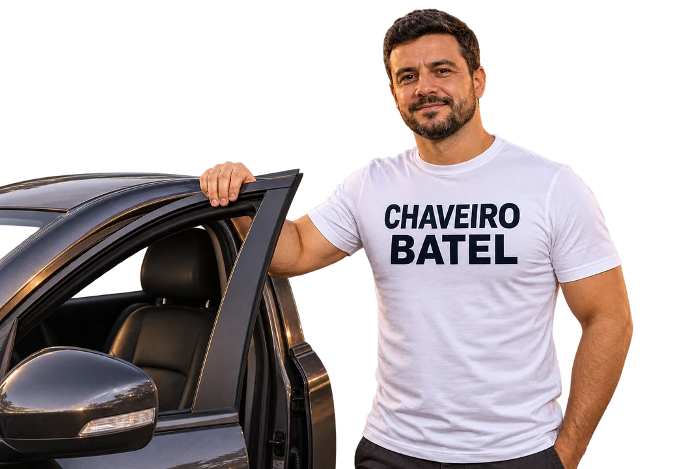

Automotivo
Abertura de carros
A chave ficou dentro do carro? Informe o modelo do veículo e onde você está para solicitar atendimento.

Emergências 24h · Curitiba
Chave dentro do carro? Porta trancada? Fale com um chaveiro agora, onde você estiver em Curitiba e região.
Nossos serviços
Escolha o serviço para ver os detalhes e pedir atendimento.
Automotivo
A chave ficou dentro do carro? Informe o modelo do veículo e onde você está para solicitar atendimento.
Também atendemos com confecção de carimbos, programação de controles para portão e chaves automotivas codificadas. Consulte pelo WhatsApp →
Nossa história
Desde 1969, o Chaveiro Batel atende residências, comércios e motoristas em Curitiba e região.
Atendimento
Informe o serviço e o bairro. A mensagem abre pronta para você enviar pelo WhatsApp.
Ver região no mapa →